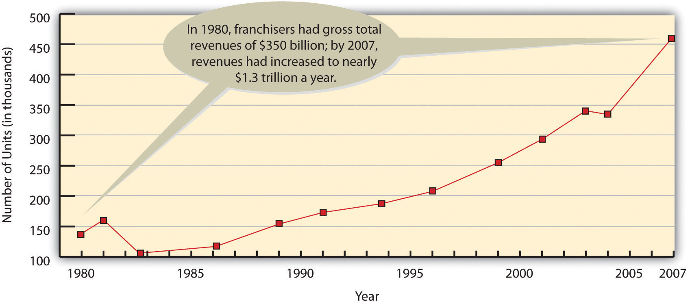

Starting a business takes talent, determination, hard work, and persistence. It also requires a lot of research and planning. Before starting your business, you should appraise your strengths and weaknesses and assess your personal goals to determine whether business ownership is for you.From Kathleen Allen, “Getting Started in Entrepreneurship,” in Entrepreneurship for Dummies (New York: Wiley, 2001), 46.
If you’re interested in starting a business, you need to make decisions even before you bring your talent, determination, hard work, and persistence to bear on your project. Here are the basic questions you’ll need to address:
After making these decisions, you’ll be ready to take the most important step in the entire process of starting a business: you must describe your future business in the form of a business planFormal document describing a proposed business concept, description of the proposed business, industry analysis, mission statement and core values, a management plan, a description of goods or services, a description of production processes, and marketing and financial plans.—a document that identifies the goals of your proposed business and explains how these goals will be achieved. Think of a business plan as a blueprint for a proposed company: it shows how you intend to build the company and how you intend to make sure that it’s sturdy. You must also take a second crucial step before you actually start up your business: You need to get financing—the money from individuals, banks, or both, that you’ll need to get your business off the ground. (Obviously, if you already have the necessary funds, you’re one of the fortunate few who can skip this step.)
For some people, coming up with a great business idea is a gratifying adventure. For most, however, it’s a daunting task. The key to coming up with a business idea is identifying something that customers want—or, perhaps more importantly, filling an unmet need. Your business will probably survive only if its purpose is to satisfy its customers—the ultimate users of its goods or services. In coming up with a business idea, don’t ask, “What do we want to sell?” but rather, “What does the customer want to buy?”Scott Thurm and Joann S. Lublin, “Peter Drucker’s Legacy Includes Simple Advice: It’s All about the People,” Wall Street Journal (November 14, 2005, B1), http://online.wsj.com/public/article/SB113192826302796041.html?mod=2_1194_3 (accessed April 21, 2006).
To come up with an innovative business idea, you need to be creative. The idea itself can come from various sources. Prior experience accounts for the bulk of new business ideas. Many people generate ideas for industries they’re already working in. Past experience in an industry also increases your chances of success. Take Sam Walton, the late founder of Wal-Mart. He began his retailing career at JCPenney and then became a successful franchiser of a Ben Franklin five-and-dime store. In 1962, he came up with the idea of opening large stores in rural areas, with low costs and heavy discounts. He founded his first Wal-Mart store in 1962, and when he died thirty years later, his family’s net worth was $25 billion.Peter Krass, “Sam Walton: 10 Rules for Building a Successful Business,” http://www.powerhomebiz.com/vol76/walton.htm (accessed April 21, 2006).
Industry experience also gave Howard Schultz, a New York executive for a housewares company, his breakthrough idea. In 1981, Schultz noticed that a small customer in Seattle—Starbucks Coffee, Tea and Spice—ordered more coffeemaker cone filters than Macy’s and many other large customers. So he flew across the country to find out why. His meeting with the owner-operators of the original Starbucks Coffee Co. resulted in his becoming part-owner of the company, and changed his life and the life of coffee lovers forever. Schultz’s vision for the company far surpassed that of its other owners. While they wanted Starbucks to remain small and local, Schultz saw potential for a national business that not only sold world-class-quality coffee beans but also offered customers a European coffee-bar experience. After attempting unsuccessfully to convince his partners to try his experiment, Schultz left Starbucks and started his own chain of coffee bars, which he called Il Giornale (after an Italian newspaper). Two years later, he bought out the original owners and reclaimed the name Starbucks.Howard Schultz and Dori Jones Yang, Pour Your Heart into It (New York: Hyperion, 1997), 24–109.
Other people come up with business ideas because of hobbies or personal interests. This was the case with Nike founder Phil Knight, who was an avid runner. He was convinced that it was possible to make high-quality track shoes that cost less than the European shoes dominating the market at the time. His track experience, coupled with his knowledge of business (Knight holds an MBA from Stanford and worked as an accountant), inspired him to start Nike. Michael Dell also turned a personal interest into a business. From a young age, he was obsessed with taking computers apart and putting them back together again, and it was this personal interest that led to his great business idea. At college, instead of attending classes, he spent his time assembling computers and, eventually, founded Dell, Inc.
We will expand on this important topic of idea generation and creativity in other chapters.
As we’ve already seen, you can become a small business owner in one of three ways—by starting a new business, buying an existing one, or obtaining a franchise. Let’s look more closely at the advantages and disadvantages of each option.
Figure 5.7

SUBWAY, the largest franchise in the world, grew from a tiny sandwich shop started in 1965 by seventeen-year-old Fred DeLuca hoping to put himself through college.
The most common—and the riskiest—option is starting from scratch. This approach lets you start with a clean slate and allows you to build the business the way you want. You select the goods or services that you’re going to offer, secure your location, and hire your employees, and then it’s up to you to develop your customer base and build your reputation. This is the path taken by Andres Mason who figured out how to inject hysteria into the process of bargain hunting on the Web. The result is an overnight success story called Groupon.Christopher Steiner , “Meet the Fastest Growing Company Ever,” Forbes, http://www.forbes.com/forbes/2010/0830/entrepreneurs-groupon-facebook-twitter-next-web-phenom.html, (accessed August 31, 2011). Here is how Groupon (a blend of the words “group” and “coupon”) works: A daily email is sent to 6.5 million people in 70 cities across the United States offering a deeply discounted deal to buy something or to do something in their city. If the person receiving the email likes the deal, he or she commits to buying it. But, here’s the catch, if not enough people sign up for the deal, it is cancelled. Groupon makes money by keeping half of the revenue from the deal. The company offering the product or service gets exposure. But stay tuned: the “daily deals website isn’t just unprofitable—it’s bleeding hundreds of millions of dollars.”“Groupon's 'Startling' Reversal of Fortune,” The Week, http://news.yahoo.com/groupons-startling-reversal-fortune-172800802.html (accessed August 31, 2011). As with all start-ups cash is always a problem.
If you decide to buy an existing business, some things will be easier. You’ll already have a proven product, current customers, active suppliers, a known location, and trained employees. You’ll also find it much easier to predict the business’s future success. There are, of course, a few bumps in this road to business ownership. First, it’s hard to determine how much you should pay for a business. You can easily determine how much things like buildings and equipment are worth, but how much should you pay for the fact that the business already has steady customers?
In addition, a business, like a used car, might have performance problems that you can’t detect without a test drive (an option, unfortunately, that you don’t get when you’re buying a business). Perhaps the current owners have disappointed customers; maybe the location isn’t as good as it used to be. You might inherit employees that you wouldn’t have hired yourself. Finally, what if the previous owners set up a competing business that draws away their former—and your current—customers?
Lastly, you can buy a franchiseForm of business ownership in which a franchiser (a seller) grants a franchisee (a buyer) the right to use a brand name and to sell its products or services.. Under this setup, a franchiser (the company that sells the franchise) grants the franchisee (the buyer—you) the right to use a brand name and to sell its goods or services. Franchises market products in a variety of industries, including food, retail, hotels, travel, real estate, business services, cleaning services, and even weight-loss centers and wedding services. There are thousands of franchises, many of which are quite familiar—SUBWAY, McDonald’s, 7-Eleven, Holiday Inn, Budget Car Rental, RadioShack, and Jiffy Lube.
As you can see from Figure 5.8 "The Growth of Franchising, 1980–2007", franchising has become an extremely popular way to do business. A new franchise outlet opens once every eight minutes in the United States, where one in ten businesses is now a franchise. Franchises employ eight million people (13 percent of the workforce) and account for 17 percent of all sales in this country ($1.3 trillion).“Census Bureau's First Release of Comprehensive Franchise Data Shows Franchises Make Up More Than 10 Percent of Employer Businesses,” U.S. Census Bureau, September 14, 2010,” U.S. Census Bureau. http://www.census.gov/newsroom/releases/archives/economic_census/cb10-141.html (accessed August 31, 2011).
Figure 5.8 The Growth of Franchising, 1980–2007
In addition to the right to use a company’s brand name and sell its products, the franchisee gets help in picking a location, starting and operating the business, and advertising. In effect, you’ve bought a prepackaged, ready-to-go business that’s proven successful elsewhere. You also get ongoing support from the franchiser, which has a vested interest in your success.
Not surprisingly, these advantages don’t come cheaply. Franchises can be very expensive, usually depending on the amount of business that a franchisee is expected to do. KFC franchises, for example, require a total investment of $1.3 million to $2.5 million each. This fee includes the cost of the property, equipment, training, start-up costs, and the franchise fee—a one-time charge for the right to operate as a KFC outlet. McDonald’s is in the same price range ($1.1 million to $1.9 million). SUBWAY sandwich shops are more affordable, with expected total investment ranging from $84,000 to $258,000. If you’d prefer teaching dance and exercise classes, you could get a Jazzercise franchise for anywhere from $3,000 to $76,000. If you don’t want to deal in food or dance, you might want to buy a dating service. The Right One® franchises go for an initial investment of $98,000 to $254,000, depending on location.“Entrepreneur 2011 Franchise 500,” Entrepreneur, http://www.entrepreneur.com/franchises/franchise500/index.html (accessed August 31, 2011).
In addition to your initial investment, you’ll have to pay two other fees on a monthly basis—a royalty fee (typically from 3 to 12 percent of sales) for continued support from the franchiser and the right to keep using the company’s trade name, plus an advertising fee to cover your share of national and regional advertising. You’ll also be expected to buy your products from the franchiser.Michael Seid and Kay Marie Ainsley, “Franchise Fee—Made Simple,” Entrepreneur.com, http://www.entrepreneur.com/article/0,4621,299085,00.html (accessed April 21, 2006).
Why do would-be business owners like franchises? For one thing, buying a franchise lets you start up under fairly safe conditions, with a proven model for running a company and a permanent support team. You can profit from name recognition without having to develop your own image in the marketplace, and you can be your own boss (as long as you comply with the standards set by the franchiser).
But there are disadvantages. The cost of obtaining and running a franchise can be high, and you have to play by the franchiser’s rules, even when you disagree with them. The franchiser maintains a great deal of control over its franchisees. For example, if you own a fast-food franchise, the franchise agreement will likely dictate the food and beverages you can sell; the methods used to store, prepare, and serve the food; and the prices you’ll charge. In addition, the agreement will dictate what the premises will look like and how they’ll be maintained.
Finally, franchisers don’t always keep their promises. What do you do if the promised advertising or employee training doesn’t materialize? What do you do if you’re forced to make unnecessary and costly alterations to your premises, or the franchising company sets up a competing establishment nearby? What if the franchising company gets bad press, which, in turn, hurts your sales? You always have the option of suing the franchiser, but this is time-consuming and costly. As with any business venture, you need to do your homework before investing in a franchise.
Before starting a business, you need to ask yourself a few basic questions:
You can become a small business owner in one of three ways, each of which has advantages and disadvantages:
(AACSB) Analysis
If business ownership interests you, you can start a new business, buy an existing one, or obtain a franchise. Evaluate the advantages and disadvantages of each option. Which option do you find most appealing, and why? Describe the business you would probably start.
(AACSB) Analysis
How would you like to spend your summer collecting trash in a used pickup? Doesn’t sound very appealing, does it? Would you quit college to do it full time? Probably not. But that’s exactly what Brian Scudamore did. And he got very rich doing it. His summer job turned into the company known as 1-800-GOT-JUNK, one of the fastest-growing franchises in the United States and Canada. Go to http://www.1800gotjunk.com to link to the Web site and learn more about the company. After looking at the Web site, answer the following questions:
As a reward for working hard, take a break and click on the Junk Genie icon on the bottom of the company’s home page (http://www.1800gotjunk.com). Can you figure out the trick? Pass it along to your friends.